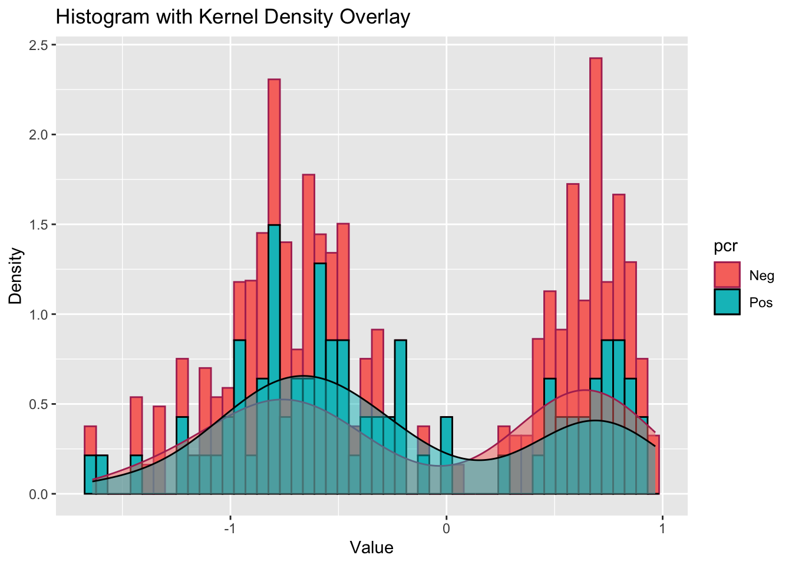

I’ll be exploring COVID serologic data. This data set includes serologic results from a CDC assay as well as several commercial assays. The data can be found on the CDC’s data website. In addition to seroreactivity (yes/no) and titers, the dataset also includes information from PCR results, a marker for current COVID infection.
Data import
First, I import the data and check the level of missingness for each variable.
#Reading in the CSVcovid <-read_csv("Examination_of_SARS-CoV-2_serological_test_results_from_multiple_commercial_and_laboratory_platforms_with_an_in-house_serum_panel_20250325.csv")
Rows: 204 Columns: 14
── Column specification ────────────────────────────────────────────────────────
Delimiter: ","
chr (4): PCR confirmed, Abbott Reactivity, Ortho Reactivity, In-House CDC E...
dbl (10): Sample #, Abbott S/C Values, Abbott S/C Values (Log10), Ortho Inde...
ℹ Use `spec()` to retrieve the full column specification for this data.
ℹ Specify the column types or set `show_col_types = FALSE` to quiet this message.
#Getting an idea of what's in the data setstr(covid)
#Based on this summary, there don't seem to be any weird valuessummary(covid)
Sample # PCR confirmed Abbott Reactivity Ortho Reactivity
Min. : 1.00 Length:204 Length:204 Length:204
1st Qu.: 51.75 Class :character Class :character Class :character
Median :102.50 Mode :character Mode :character Mode :character
Mean :102.50
3rd Qu.:153.25
Max. :204.00
In-House CDC ELISA Reactivity Abbott S/C Values Abbott S/C Values (Log10)
Length:204 Min. :0.020 Min. :-1.6990
Class :character 1st Qu.:0.150 1st Qu.:-0.8239
Mode :character Median :0.385 Median :-0.4145
Mean :2.170 Mean :-0.1819
3rd Qu.:4.468 3rd Qu.: 0.6500
Max. :7.940 Max. : 0.8998
Ortho Index Values Ortho Index Values (Log10) In-House CDC ELISA S/T Values
Min. : 0.01 Min. :-2.0000 Min. :0.0375
1st Qu.: 0.02 1st Qu.:-1.6990 1st Qu.:0.1536
Median : 0.03 Median :-1.5229 Median :0.5433
Mean : 65.09 Mean :-0.1801 Mean :1.4444
3rd Qu.: 74.38 3rd Qu.: 1.8714 3rd Qu.:3.1919
Max. :660.00 Max. : 2.8195 Max. :3.9192
In-House CDC ELISA S/T Values (Log10) mNT TITER mNT TITER (Log10)
Min. :-1.4260 Min. : 10.0 Min. :1.000
1st Qu.:-0.8137 1st Qu.: 10.0 1st Qu.:1.000
Median :-0.2650 Median : 10.0 Median :1.000
Mean :-0.2231 Mean : 352.7 Mean :1.625
3rd Qu.: 0.5040 3rd Qu.: 277.8 3rd Qu.:2.443
Max. : 0.5932 Max. :5954.0 Max. :3.775
sVNT % Inhibition
Min. :0.0000
1st Qu.:0.1700
Median :0.2800
Mean :0.3993
3rd Qu.:0.6925
Max. :0.9600
#There are no missing valuesgg_miss_var(covid)
I also am choosing to restrict the dataset to variables with information on PCR status, the CDC in-house assay, and the commercial assay from Abbott. There are also variables for both the titer and the log 10 of the titer. Since this information is redundant, I only kept the log transformed variables as these more closely resemble a normal distribution.
#Restricting data to variables PCR status, the CDC in-house assay, and the commercial assay from Abbottcovid_mini <- covid %>%select(c('PCR confirmed','Abbott Reactivity','In-House CDC ELISA Reactivity','Abbott S/C Values (Log10)', 'In-House CDC ELISA S/T Values (Log10)'))#Confirming reductionstr(covid_mini)
Next, I chose to look at the categorical variables in the dataset: PCR status, Abbott Reactivity, In-House CDC ELISA Reactivity. These tables show the total sample size (N), count (CNT), and percent (PCT) of each category. I also did a crosstab of each of the categorical variables with each other.
# Frequency of PCR statusproc_freq(data = covid_mini, tables =`PCR confirmed`)
# A tibble: 2 × 5
VAR CAT N CNT PCT
<chr> <chr> <dbl> <dbl> <dbl>
1 PCR confirmed Neg 204 117 57.4
2 PCR confirmed Pos 204 87 42.6
# Frequency of Abbott Reactivityproc_freq(data = covid_mini, tables =`Abbott Reactivity`)
# A tibble: 2 × 5
VAR CAT N CNT PCT
<chr> <chr> <dbl> <dbl> <dbl>
1 Abbott Reactivity Non-reactive 204 120 58.8
2 Abbott Reactivity Reactive 204 84 41.2
# Frequency of In-House CDC ELISA Reactivityproc_freq(data = covid_mini, tables =`In-House CDC ELISA Reactivity`)
#The proc means function was struggling with the names of the variables, so I created new variables for each of the categorical variables with shorter namesrenames <- covid_mini %>%mutate(pcr =`PCR confirmed`) %>%mutate(cdc =`In-House CDC ELISA Reactivity`) %>%mutate(abbott =`Abbott Reactivity`)#Cross tab of each of the categorical variablesproc_freq(data = renames, tables =v(pcr * cdc, pcr * abbott, cdc * abbott))
Next, I looked at the distribution of the continous variables: Abbott S/C Values (Log10), In-House CDC ELISA S/T Values (Log10).
For each variable, I created a table that includes the sample size, mean, standard deviation, min, and max and a histogram of the values. Because there appeared to be a bimodal distribution, I performed these steps by seroreactivity status for the relevant assay. I also assessed the distribution of each log titer (from Abbott and CDC) by PCR status.
#Producing a table showing the sample size, mean, standard deviation, min, and max for each continuous variable#Also creating a figure of each variable#Overall stats - Abbottproc_means(data = covid_mini, `Abbott S/C Values (Log10)`)
# A tibble: 1 × 8
TYPE FREQ VAR N MEAN STD MIN MAX
<dbl> <int> <chr> <int> <dbl> <dbl> <dbl> <dbl>
1 0 204 Abbott S/C Values (Log10) 204 -0.182 0.761 -1.70 0.900
#Stats by seroreactivity status - Abbottproc_means(data = covid_mini, `Abbott S/C Values (Log10)`, by =`Abbott Reactivity`)
# A tibble: 2 × 9
BY TYPE FREQ VAR N MEAN STD MIN MAX
<chr> <dbl> <int> <chr> <int> <dbl> <dbl> <dbl> <dbl>
1 Non-reactive 0 120 Abbott S/C Values (L… 120 -0.775 0.325 -1.70 0.134
2 Reactive 0 84 Abbott S/C Values (L… 84 0.665 0.175 0.164 0.900
ggplot(covid_mini, aes(x =`Abbott S/C Values (Log10)`, fill =`Abbott Reactivity`, color =`Abbott Reactivity`)) +geom_histogram(aes(y = ..density..), bins =50) +geom_density(alpha =0.5) +scale_color_manual(values =c("Non-reactive"="maroon", "Reactive"="black")) +labs(title ="Histogram with Kernel Density Overlay",x ="Value",y ="Density")
Warning: The dot-dot notation (`..density..`) was deprecated in ggplot2 3.4.0.
ℹ Please use `after_stat(density)` instead.
# A tibble: 1 × 8
TYPE FREQ VAR N MEAN STD MIN MAX
<dbl> <int> <chr> <int> <dbl> <dbl> <dbl> <dbl>
1 0 204 In-House CDC ELISA S/T Values (Log… 204 -0.223 0.648 -1.43 0.593
#Stats by seroreactivity status - CDCproc_means(data = covid_mini, `In-House CDC ELISA S/T Values (Log10)`, by =`In-House CDC ELISA Reactivity`)
# A tibble: 2 × 9
BY TYPE FREQ VAR N MEAN STD MIN MAX
<chr> <dbl> <int> <chr> <int> <dbl> <dbl> <dbl> <dbl>
1 Non-reactive 0 118 In-House CDC ELIS… 118 -0.733 0.310 -1.43 -0.0158
2 Reactive 0 86 In-House CDC ELIS… 86 0.476 0.124 0.0086 0.593
ggplot(covid_mini, aes(x =`In-House CDC ELISA S/T Values (Log10)`, fill =`In-House CDC ELISA Reactivity`, color =`In-House CDC ELISA Reactivity`)) +geom_histogram(aes(y = ..density..), bins =50) +geom_density(alpha =0.5) +scale_color_manual(values =c("Non-reactive"="maroon", "Reactive"="black")) +labs(title ="Histogram with Kernel Density Overlay",x ="Value",y ="Density")
#Distribution of log titers by PCR status#Abbott#Stats by seroreactivity status - Abbottproc_means(data = covid_mini, `Abbott S/C Values (Log10)`, by =`PCR confirmed`)
# A tibble: 2 × 9
BY TYPE FREQ VAR N MEAN STD MIN MAX
<chr> <dbl> <int> <chr> <int> <dbl> <dbl> <dbl> <dbl>
1 Neg 0 117 Abbott S/C Values (Log10) 117 -0.767 0.332 -1.70 0.238
2 Pos 0 87 Abbott S/C Values (Log10) 87 0.605 0.355 -1.30 0.900
ggplot(covid_mini, aes(x =`Abbott S/C Values (Log10)`, fill =`PCR confirmed`, color =`PCR confirmed`)) +geom_histogram(aes(y = ..density..), bins =50) +geom_density(alpha =0.5) +scale_color_manual(values =c("Neg"="maroon", "Pos"="black")) +labs(title ="Histogram with Kernel Density Overlay",x ="Value",y ="Density")
The correlation matrix above displays very strong associations between the variables. The correlations between pcr and pcr, abbott and abbott, as well as cdc and cdc are all 1. This is expected as there should be a 100% match when a variable is compared to itself. The correlation between pcr and abbott is 0.95; the correlation between pcr and cdc is 0.95; the correlation between abbot and cdc is 0.96. These high correlation coefficients suggest that the variables are highly associated with each other. I aim to ensure that the correlations between these variables are similar within the synthetic dataset.
Summary Statistics
I will run a summary line and count lines to obtain information on means and standards that will help me to create the synthetic dataset.
summary(covid_mini)
PCR confirmed Abbott Reactivity In-House CDC ELISA Reactivity
Length:204 Length:204 Length:204
Class :character Class :character Class :character
Mode :character Mode :character Mode :character
Abbott S/C Values (Log10) In-House CDC ELISA S/T Values (Log10)
Min. :-1.6990 Min. :-1.4260
1st Qu.:-0.8239 1st Qu.:-0.8137
Median :-0.4145 Median :-0.2650
Mean :-0.1819 Mean :-0.2231
3rd Qu.: 0.6500 3rd Qu.: 0.5040
Max. : 0.8998 Max. : 0.5932
I will now calculate the mean and standard deviation of the log-transformed variables. I will calculate the mean and standard deviation for both the reactive and non-reactive groups.
I will now calculate the mean and standard deviation of Abott S/C Values (Log10) for when abbott reactivity is equal to reactive and then non-reactive.
# Mean of Abbott S/C Values (Log10) for "Reactive" Abbott Reactivitymean_reactive_abbott <-mean(covid_mini$`Abbott S/C Values (Log10)`[covid_mini$`Abbott Reactivity`=="Reactive"])# Mean of Abbott S/C Values (Log10) for "Non-reactive" Abbott Reactivitymean_non_reactive_abbott <-mean(covid_mini$`Abbott S/C Values (Log10)`[covid_mini$`Abbott Reactivity`=="Non-reactive"])# Output the resultsmean_reactive_abbott
[1] 0.6649786
mean_non_reactive_abbott
[1] -0.7746825
# sd of Abbott S/C Values (Log10) for "Reactive" Abbott Reactivitysd_reactive_abbott <-sd(covid_mini$`Abbott S/C Values (Log10)`[covid_mini$`Abbott Reactivity`=="Reactive"])# sd of Abbott S/C Values (Log10) for "Non-reactive" Abbott Reactivitysd_non_reactive_abbott <-sd(covid_mini$`Abbott S/C Values (Log10)`[covid_mini$`Abbott Reactivity`=="Non-reactive"])# Output the resultssd_reactive_abbott
[1] 0.1746322
sd_non_reactive_abbott
[1] 0.3248742
I will now calculate the mean and standard deviation of In-House CDC ELISA S/T Values (Log10) for when In-House CDC ELISA Reactivity is equal to reactive and then non-reactive.
# Mean of In-House CDC ELISA S/T Values (Log10) for "Reactive" In-House CDC ELISA Reactivitymean_reactive_cdc <-mean(covid_mini$`In-House CDC ELISA S/T Values (Log10)`[covid_mini$`In-House CDC ELISA Reactivity`=="Reactive"])# Mean of In-House CDC ELISA S/T Values (Log10) for "Non-reactive" In-House CDC ELISA Reactivitymean_non_reactive_cdc <-mean(covid_mini$`In-House CDC ELISA S/T Values (Log10)`[covid_mini$`In-House CDC ELISA Reactivity`=="Non-reactive"])# Output the resultsmean_reactive_cdc
[1] 0.4762291
mean_non_reactive_cdc
[1] -0.7327059
# sd of In-House CDC ELISA S/T Values (Log10) for "Reactive" In-House CDC ELISA Reactivitysd_reactive_cdc <-sd(covid_mini$`In-House CDC ELISA S/T Values (Log10)`[covid_mini$`In-House CDC ELISA Reactivity`=="Reactive"])# sd of In-House CDC ELISA S/T Values (Log10) for "Non-reactive" In-House CDC ELISA Reactivitysd_non_reactive_cdc <-sd(covid_mini$`In-House CDC ELISA S/T Values (Log10)`[covid_mini$`In-House CDC ELISA Reactivity`=="Non-reactive"])# Output the resultssd_reactive_cdc
[1] 0.1244573
sd_non_reactive_cdc
[1] 0.3102606
Generating Synthetic Dataset
Next, I will set a seed for reproducibility and specify 204 as the number of observations.
# Setting seed for reproducibilityset.seed(123) # Define number of observations n_obs <-204# same as original dataset
I will now create the synthetic dataset. I will use the notes I took from Module 4B: Synthetic Data to help with this. Throughout the process of creating this dataset, I ran into a few errors which I sent through ChatGPT to obtain help.
# Creation of empty data frame with placeholders for variablescovid_synthetic <-data.frame(pcr =character(n_obs), abbott =character(n_obs),cdc =character(n_obs),Abbott_S_C_Values_Log10 =numeric(n_obs),In_House_CDC_ELISA_S_T_Values_Log10 =numeric(n_obs))# Variable 1: pcrcovid_synthetic$pcr <-sample(c("Pos", "Neg"), n_obs, replace =TRUE, prob =c(0.43, 0.57)) # probabilities created from counts line above (87/204 pos; 117/204 neg)# Variable 2: abbottcovid_synthetic$abbott <-sample(c("Reactive", "Non-reactive"), n_obs, replace =TRUE, prob =c(0.41, 0.59)) # probabilities created from counts line above (84/204 reactive; 120/204 non-reactive)# Variable 3: cdccovid_synthetic$cdc <-sample(c("Reactive", "Non-reactive"), n_obs, replace =TRUE, prob =c(0.42, 0.58)) # probabilities created from counts line above (86/204 reactive; 118/204 non-reactive)# Variable 4: Abbott_S_C_Values_Log10covid_synthetic$Abbott_S_C_Values_Log10 <-unlist(sapply(covid_synthetic$abbott, function(reactivity) {if (reactivity =="Reactive") {rnorm(1, mean =0.6649786, sd =0.1746322) # Mean and sd for Reactive (calculated above) } else {rnorm(1, mean =-0.7746825, sd =0.3248742) # Mean and sd for Non-reactive (calculated above) }}))## ChatGPT Prompt: # Variable 4: Abbott_S_C_Values_Log10 covid_synthetic$Abbott_S_C_Values_Log10 <- rnorm(n_obs, mean = -0.1818809, sd = 0.76081) # mean (-0.1818809) and sd (0.76081) based on original data --- fix this so it shows the mean for reactive (0.6649786) and non-reactive (-0.7746825)## Error in $<-.data.frame(*tmp*, Abbott_S_C_Values_Log10, value = list()) : replacement has 0 rows, data has 204. Please help fix this.### I used information from the output of this prompt to fix Variable 5 as well. # Variable 5: In_House_CDC_ELISA_S_T_Values_Log10covid_synthetic$In_House_CDC_ELISA_S_T_Values_Log10 <-unlist(sapply(covid_synthetic$cdc, function(reactivity) {if (reactivity =="Reactive") {rnorm(1, mean =0.4762291, sd =0.1244573) # Mean and sd for Reactive (calculated above) } else {rnorm(1, mean =-0.7327059, sd =0.3102606) # Mean and sd for Non-reactive (calculated above) }}))
Assessing Correlations from the Synthetic Dataset
I will create a correlation matrix to visualize the relationships between the variables in the original dataset.
The correlation matrix above shows that the correlation coefficients dervied from the synthetic dataset variables appear to be identical to those of the original dataset. This suggests that the synthetic dataset is a good representation of the original dataset.
Exploratory tables - categorical variables
Now, I will use Rayleen’s code to explore the synthetic dataset’s categorical variables.
# Frequency of PCR statusproc_freq(data = covid_synthetic, tables =`pcr`)
VAR CAT N CNT PCT
1 pcr Neg 204 116 56.86275
2 pcr Pos 204 88 43.13725
# Frequency of Abbott Reactivityproc_freq(data = covid_synthetic, tables =`abbott`)
VAR CAT N CNT PCT
1 abbott Non-reactive 204 124 60.78431
2 abbott Reactive 204 80 39.21569
# Frequency of In-House CDC ELISA Reactivityproc_freq(data = covid_synthetic, tables =`cdc`)
VAR CAT N CNT PCT
1 cdc Non-reactive 204 119 58.33333
2 cdc Reactive 204 85 41.66667
#Cross tab of each of the categorical variablesproc_freq(data = renames, tables =v(pcr * cdc, pcr * abbott, cdc * abbott))
Now, I will use Rayleen’s code to explore the synthetic dataset’s continuous variables.
#Producing a table showing the sample size, mean, standard deviation, min, and max for each continuous variable#Also creating a figure of each variable#Overall stats - Abbottproc_means(data = covid_synthetic, `Abbott_S_C_Values_Log10`)
TYPE FREQ VAR N MEAN STD MIN MAX
1 0 204 Abbott_S_C_Values_Log10 204 -0.1952212 0.739211 -1.639148 0.9660903
#Stats by seroreactivity status - Abbottproc_means(data = covid_synthetic, `Abbott_S_C_Values_Log10`, by =`abbott`)
BY TYPE FREQ VAR N MEAN STD
1 Non-reactive 0 124 Abbott_S_C_Values_Log10 124 -0.7406296 0.3458298
2 Reactive 0 80 Abbott_S_C_Values_Log10 80 0.6501619 0.1651686
MIN MAX
1 -1.6391477 0.06071791
2 0.2764241 0.96609031
ggplot(covid_synthetic, aes(x =`Abbott_S_C_Values_Log10`, fill =`abbott`, color =`abbott`)) +geom_histogram(aes(y = ..density..), bins =50) +geom_density(alpha =0.5) +scale_color_manual(values =c("Non-reactive"="maroon", "Reactive"="black")) +labs(title ="Histogram with Kernel Density Overlay",x ="Value",y ="Density")
TYPE FREQ VAR N MEAN STD
1 0 204 In_House_CDC_ELISA_S_T_Values_Log10 204 -0.2404068 0.6352775
MIN MAX
1 -1.604468 0.7786885
#Stats by seroreactivity status - CDCproc_means(data = covid_synthetic, `In_House_CDC_ELISA_S_T_Values_Log10`, by =`cdc`)
BY TYPE FREQ VAR N MEAN
1 Non-reactive 0 119 In_House_CDC_ELISA_S_T_Values_Log10 119 -0.7349032
2 Reactive 0 85 In_House_CDC_ELISA_S_T_Values_Log10 85 0.4518882
STD MIN MAX
1 0.3041904 -1.6044683 0.02993342
2 0.1180522 0.1963183 0.77868855
ggplot(covid_synthetic, aes(x =`In_House_CDC_ELISA_S_T_Values_Log10`, fill =`cdc`, color =`cdc`)) +geom_histogram(aes(y = ..density..), bins =50) +geom_density(alpha =0.5) +scale_color_manual(values =c("Non-reactive"="maroon", "Reactive"="black")) +labs(title ="Histogram with Kernel Density Overlay",x ="Value",y ="Density")
#Distribution of log titers by PCR status#Abbott#Stats by seroreactivity status - Abbottproc_means(data = covid_synthetic, `Abbott_S_C_Values_Log10`, by =`pcr`)
BY TYPE FREQ VAR N MEAN STD MIN
1 Neg 0 116 Abbott_S_C_Values_Log10 116 -0.1411672 0.7662772 -1.633373
2 Pos 0 88 Abbott_S_C_Values_Log10 88 -0.2664741 0.6998718 -1.639148
MAX
1 0.9660903
2 0.8807705
ggplot(covid_synthetic, aes(x =`Abbott_S_C_Values_Log10`, fill =`pcr`, color =`pcr`)) +geom_histogram(aes(y = ..density..), bins =50) +geom_density(alpha =0.5) +scale_color_manual(values =c("Neg"="maroon", "Pos"="black")) +labs(title ="Histogram with Kernel Density Overlay",x ="Value",y ="Density")

#CDCproc_means(data = covid_synthetic, `In_House_CDC_ELISA_S_T_Values_Log10`, by =`pcr`)
BY TYPE FREQ VAR N MEAN STD
1 Neg 0 116 In_House_CDC_ELISA_S_T_Values_Log10 116 -0.2371385 0.6495497
2 Pos 0 88 In_House_CDC_ELISA_S_T_Values_Log10 88 -0.2447150 0.6196324
MIN MAX
1 -1.604468 0.7786885
2 -1.539911 0.5759087
ggplot(covid_synthetic, aes(x =`In_House_CDC_ELISA_S_T_Values_Log10`, fill =`pcr`, color =`pcr`)) +geom_histogram(aes(y = ..density..), bins =50) +geom_density(alpha =0.5) +scale_color_manual(values =c("Neg"="maroon", "Pos"="black")) +labs(title ="Histogram with Kernel Density Overlay",x ="Value",y ="Density")
Comparison of the Original and Synthetic datasets
I will now compare the original and synthetic datasets. I ran the same exploratory analyses that Rayleen did for optimal comparison of the two datasets. The exploratory tables for the categorical variables are similar between the datasets. The counts and PCTs between each table from the original and synthetic datasets are very similar. The exploratory analyses for the continuous variables are also similar. The first two graphs created from the synthetic dataset are similar to those from the original dataset. Their distribution is similar in that the reactive group has a higher mean value and is much more steep than the non-reactive group. However, for the last two graphs, the distribution is different. The synthetic dataset graphs are bimodal and the reactive and non-reactive groups seem to overlap. There is minimal overlap present in the original graphs. The correlation matrices for the variables appear to be identical between the original and the synthetic datasets.